Cpyright © 2018, The International Brand
All Rights Reserved
Developed & Maintained by Mangaraj Bidika
The very first Apple Computer logo, drawn by Ronald Wayne, depicts Isaac Newton under an apple tree. Created by Rob Janoff in 1977, the Apple logo with the rainbow scheme was used from April of that year until August 26, 1999. Steve Jobs has asserted the apple logo was inspired by the story of his childhood..
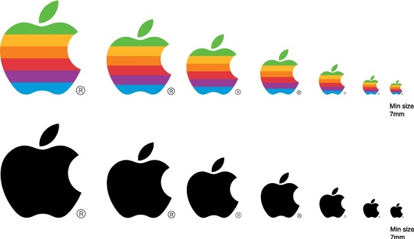 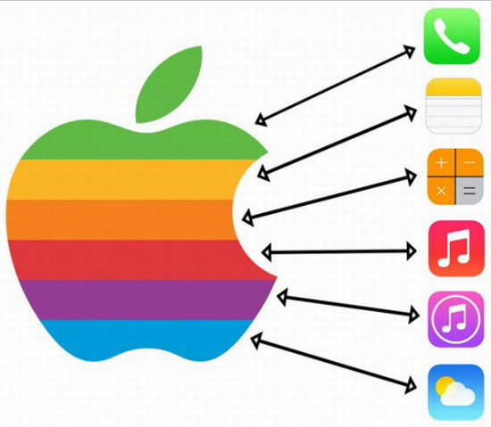| Apple Logo | Logo History |
|---|
Before going further, please read this: Monojit Halder's answer to What are the major changed india had after 70 years of independence? It has paved the way for many changes such as: Urbanisation, industrialisation, modernisation, westernization, financial prosperity, prevalence of
| Steve Jobs | Brand Lunch |
|---|
There're many disadvantages and advantage of owning Macbook rather than owning windows laptop. It totally depends on your workflow and the usage. I'll list down some advantages and disadvantages by assuming your workflow quite similar to mine. Adv... ...
 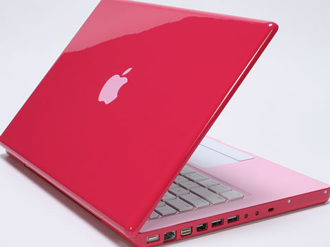
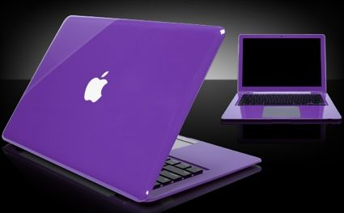
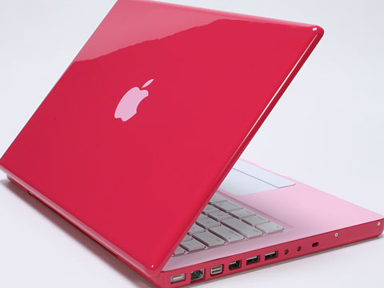
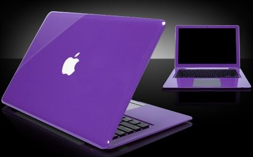
| Apple1 | Apple2 | Apple3 | Apple4 |
|---|
You get a smartphone which does all the stuff it is intended to do in the most reliable way. This is the biggest advantage of iPhone over Android, as we all know, Android we see in mobiles are customized by the Smartphone manufacturers and this brings in pain of instability in daily usability..
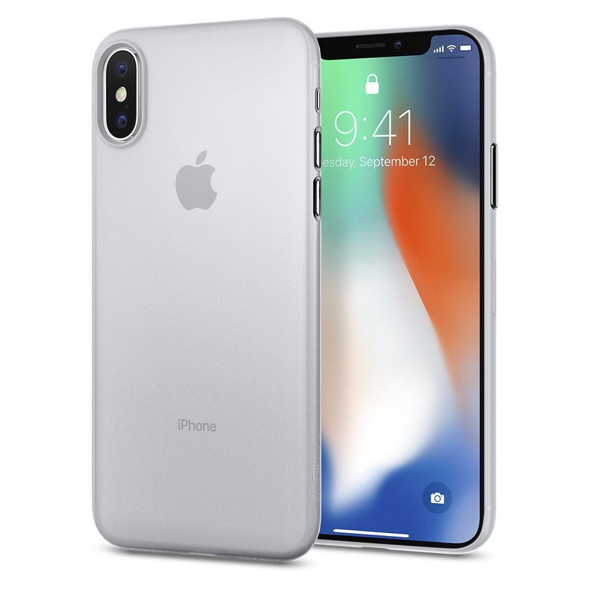
 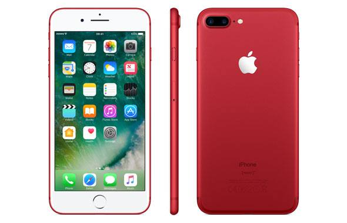
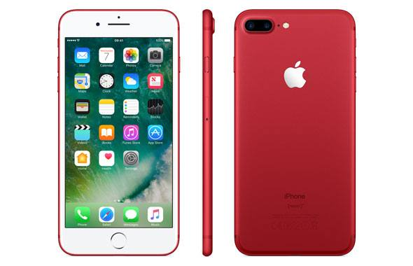
| i phone x | iphone6-plus | iphone8-plus | apple-iphone-7-plus |
|---|
The Macintosh computer has long stood out from its PC counterpart. Part of that comes from it having been the first home computer to use a mouse-based graphical interface, but a lot also comes from the "mystique" that Steve Jobs has built around his company. Apple computers are more "hip" and "cool" than PCs, and that also makes the person using them just as unique ...
 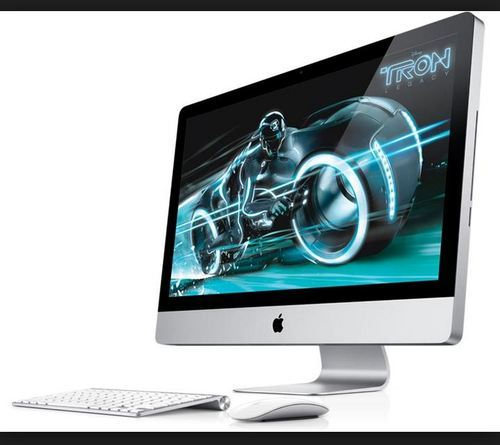
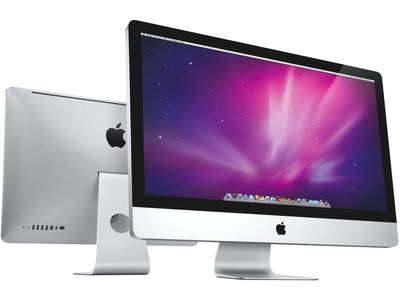
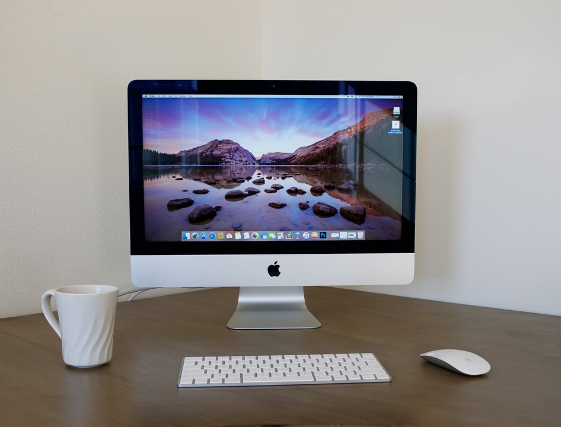
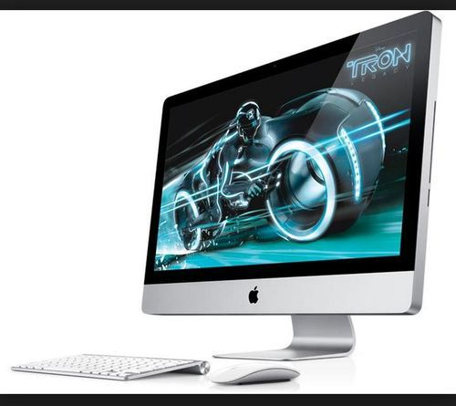
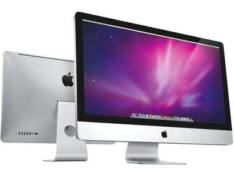
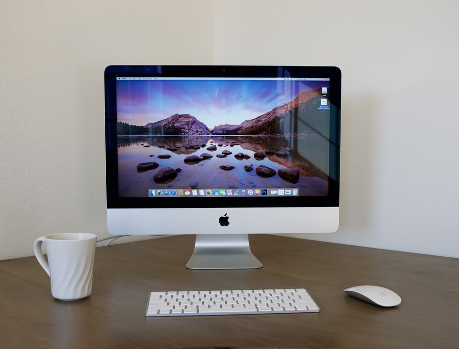
| 1 | 2 | 3 | 4 |
|---|
Apple's earbuds, those simple white earphones that have shipped with every iPod since the very first one in 2001, have grown to be as symbolic of Apple brand as the iPod itself. After a few minor variations on the same design, adding the remote and microphone features over the past 10 years, Apple ....
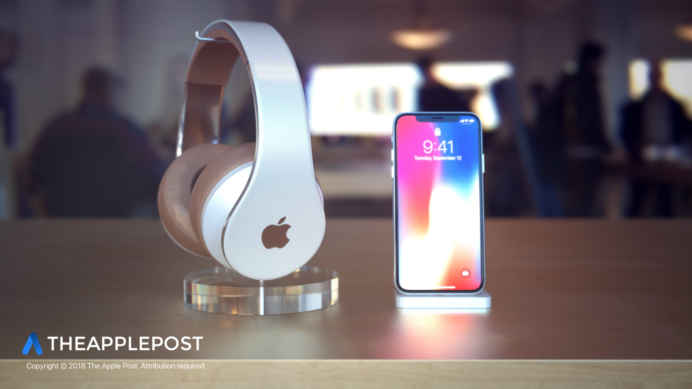 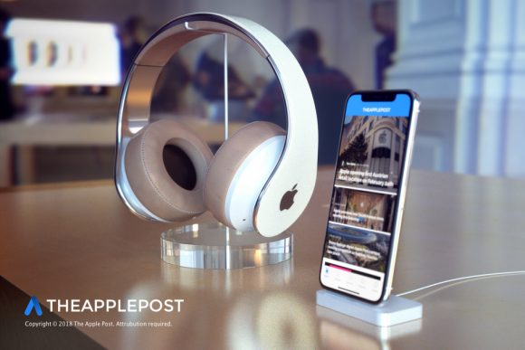 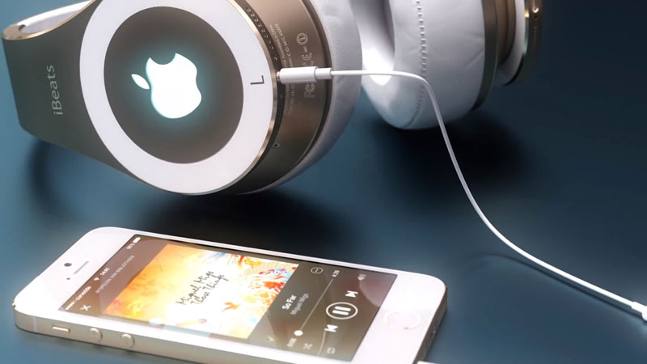 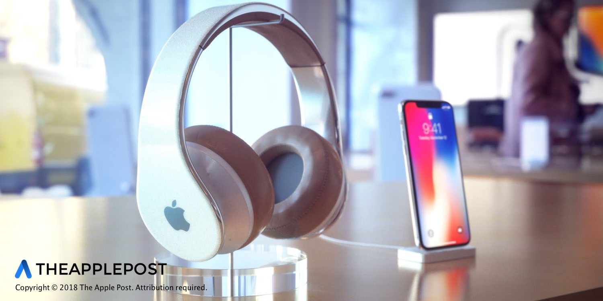| 1 | 2 | 3 | 4 |
|---|